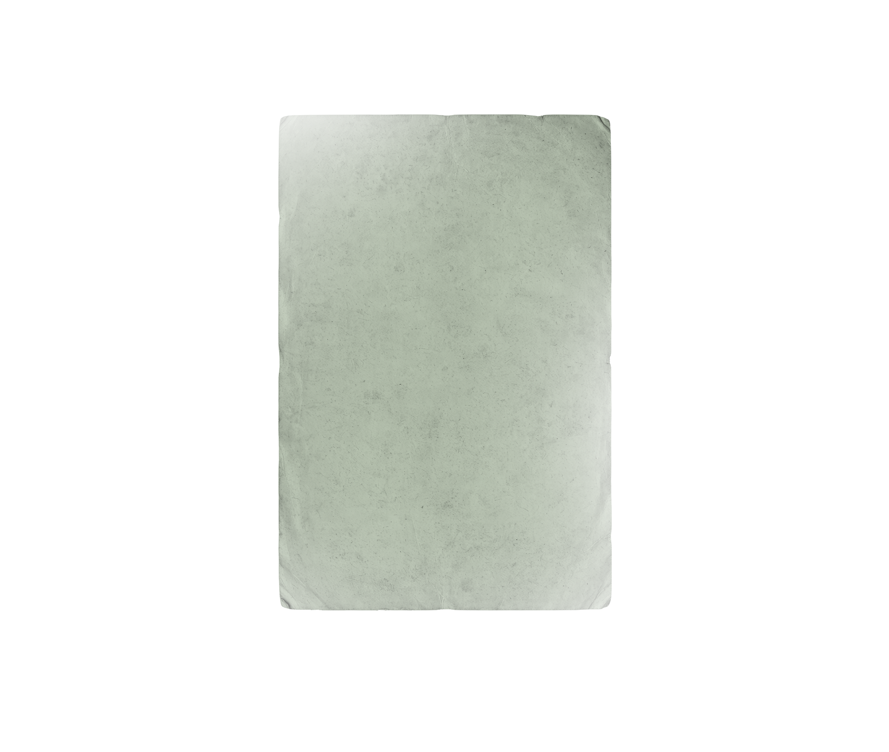
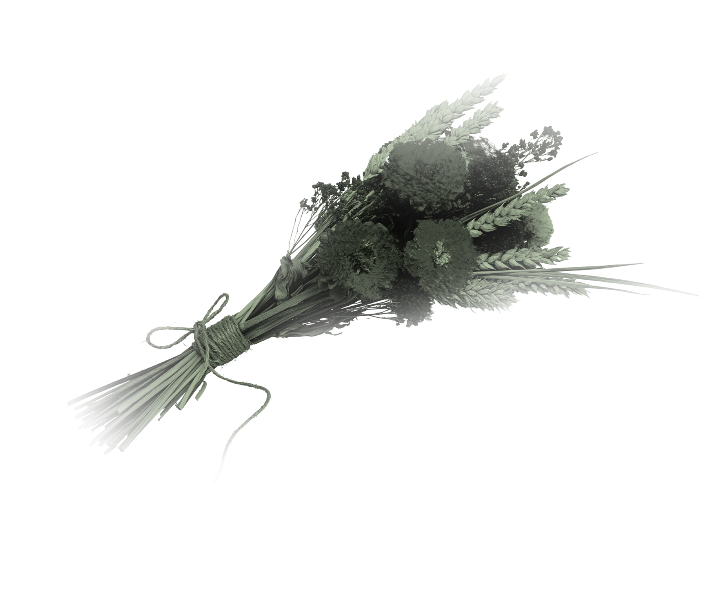
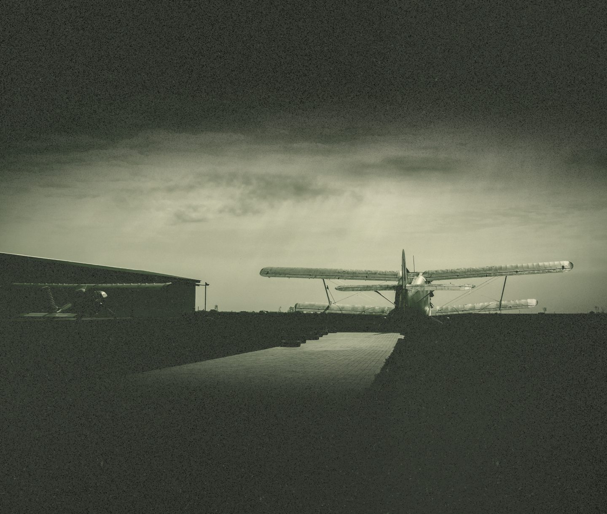
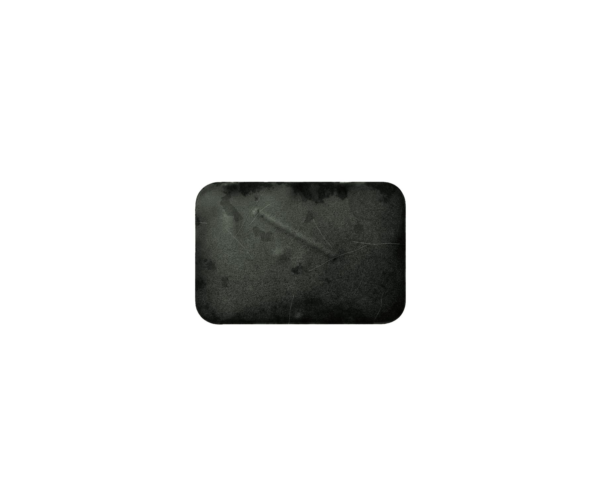
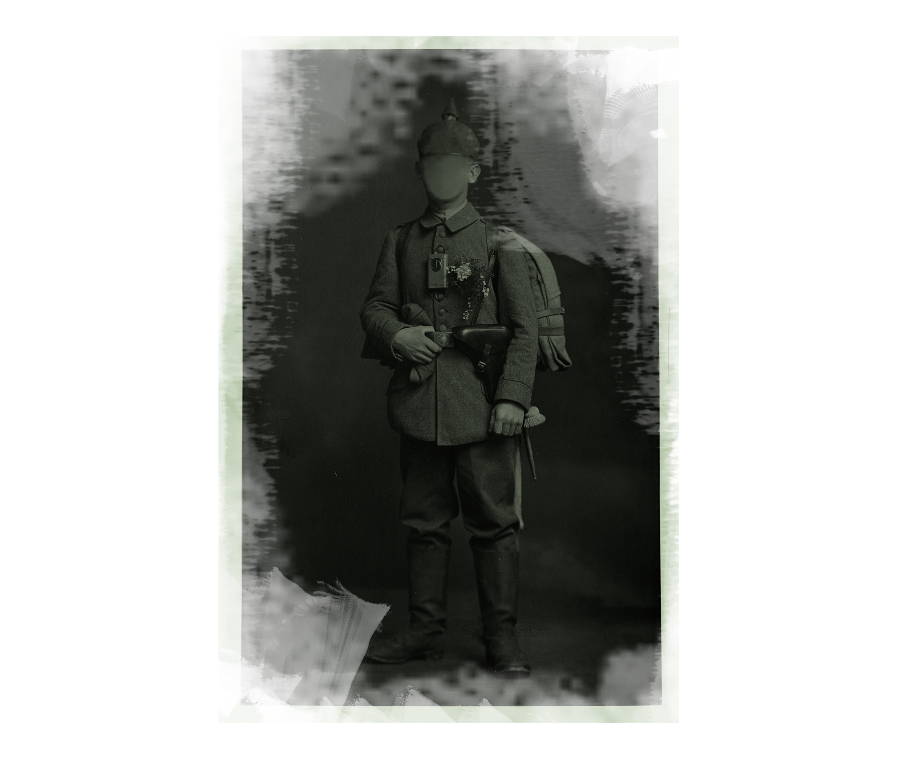
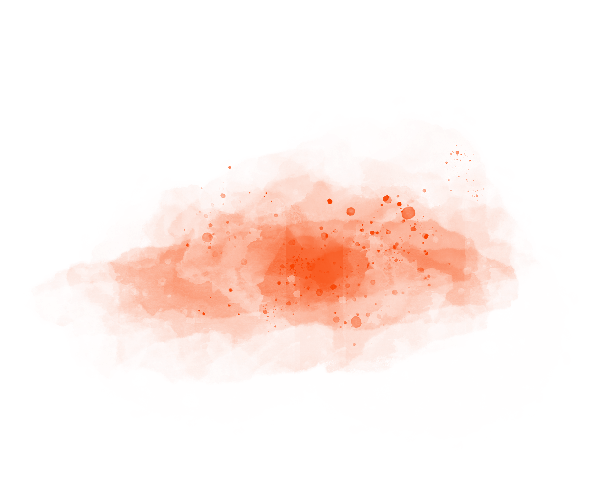

[ paste line 1 here ] [ paste line 2 here ]
[ paste line 1 here ] [ paste line 2 here ]

[ scene 02 · line 1 ]
[ scene 02 · line 2 ]

[ scene 03 · line 1 ]
[ scene 03 · line 2 ]


[ scene 04 · line 1 ]
[ scene 04 · line 2 ]







[ scene 06 · line 1 ]
[ scene 06 · line 2 ]
[ scene 06 · line 3 ]


[ scene 07 · line 1 ]
[ scene 07 · line 2 ]
[ scene 07 · line 3 ]


[ scene 08 · line 1 ]
[ scene 08 · line 2 ]
[ scene 08 · line 3 ]
[ scene 09 ]